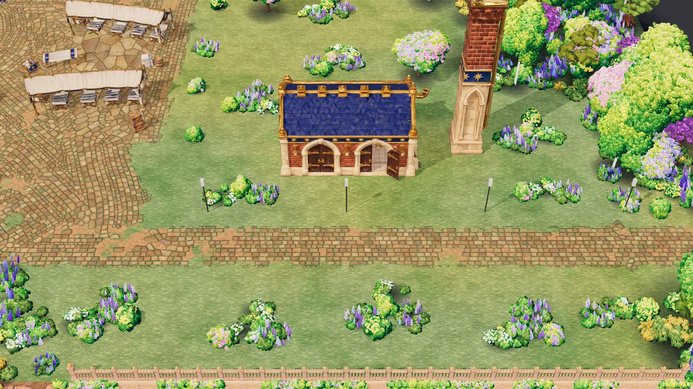
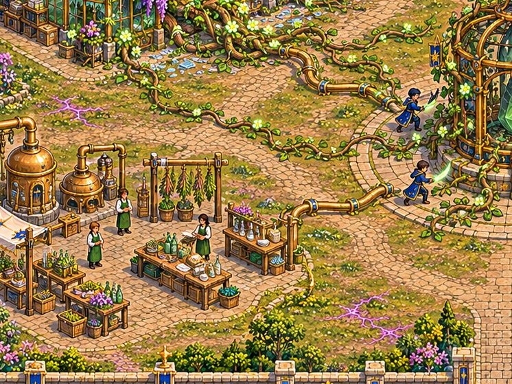

Large lawns and meadows will be behind most of the game. The infirmary's lawn today reads as felt. Below are eight concept pictures from Codex: six repaint our own frame with only the grass changed, and two imagine open country. Mark each one, then answer the four questions at the end. I'll build round 2 from your answers.
Connecting to the feedback store…
Your picks, built: the combined look (p9), cloud shadows and wind, in the infirmary first, as ground and light first, then tufts. These are renders from the game's own camera. Drag across each picture to compare it with this morning. A Codex critic reviewed five rounds and an advanced model advised once; the critic's last score is 6.5 out of 10, "presentable as a first in-game version".
Next (round 3, waiting on your marks): the critic's last notes, which are deeper olive hollows, fewer and calmer tuft stamps, and a sparser margin fringe. After that come more ground types (dry grass, heath, moss, reeds) on the same system.


Drag across a picture to compare it with today's frame.
Our camera is high and steep, so a blade is a few pixels long and seen from the top. Single blades barely read. Colour, clumps, moving light and edges do, and most of that is cheap shader work and placement, not geometry. Costs are my estimates for a basic laptop GPU.
| Layer | What it is | From our camera | Cost | Shows in |
|---|---|---|---|---|
| 1. Better painted ground | The tile repeats in random hex patches so no grid shows; a clump mask shades tufts light over dark; baked shade under props; a painted layer for worn earth, shade lawn and dry patches. | Fixes most of the felt look on its own | nearly free | p1, p5, p8 |
| 2. Moving light | Cloud shadows scrolling over the whole level; wind sheen bands rolling across long grass with the gusts our bushes already sway in. | Big, calm movement. The field feels alive | nearly free | p2, p3 |
| 3. Painted tuft cards | Thousands of small camera-facing cards (like our bushes) of painted grass clumps, coloured and lit as the ground under them, so they merge instead of reading as spots. | Real height at edges, round posts, in long grass | moderate | p5 rings, p7 |
| 4. Instanced blades | Every blade a few triangles, swayed on the GPU (Ghost of Tsushima, the three.js tutorials). | Wasted on open ground from above; fine for a hero spot | high | p3 |
| 5. Shell texturing | The ground drawn 8 to 16 times, stacked like fur. | Velvet moss; looks like CG fur on a meadow | high fill | none |
| 6. Interaction | A small top-down map of trampling, scorch, frost and wet that the ground and cards read. | Wizards leave trails; Fire, Cold and Water mark the field | small | later |
My recommendation: layers 1 and 2 first, since every grassy level gets them, then 3 where grass is long or meets an edge. Where grass is long, worn or shaded is level dressing, painted in the editor the way paving is laid.